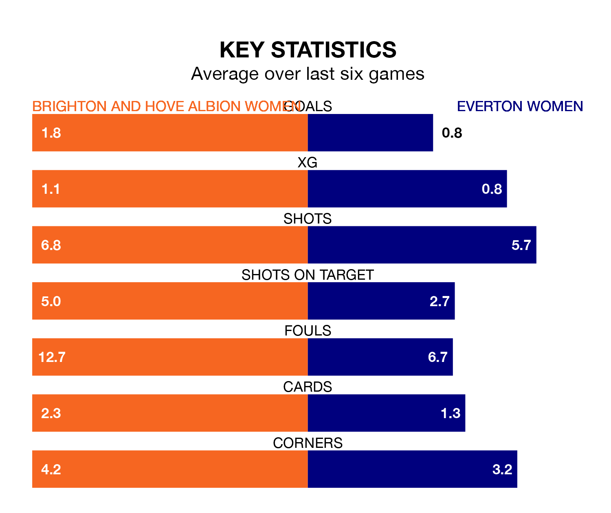

Everton Women come to the Broadfield Stadium to play Brighton and Hove Albion Women on late Friday in poor form, having collected just four points from their last six games.
The visitors have won one and drawn one of their last six fixtures, while the Seagulls have two wins and a draw.
In the last 10 years, Brighton & Hove Albion and Everton have played each other on 12 occasions. They won four each, and they drew four times.
On average, the Seagulls scored 1.2 goals and the Toffees 1.9 in those matches.
Their last meeting was on October 1, when Brighton & Hove Albion won 2-1 away.
In Elisabeth Terland, Brighton & Hove Albion have one of the league's sharpest shooters so far this season. She has notched 12 goals in 18 appearances, to sit third in the scoring charts.
Everton's top scorers, with three goals in 17 games each, are Aurora Galli and Megan Finnigan.
The Toffees are 10th in the table after 18 games, of which they have won four and drawn three, earning 15 points.
The Seagulls are two places ahead of the visitors in eighth, with five wins and three draws putting them on 18 points.
With 15 goals in 18 games so far this season, Everton are the league's lowest scorers with 0.8 goals per game. And they are conceding more than average, letting in 33 goals at a rate of 1.8 per game.
The home team are also below average scorers, with 1.3 goals per game, compared to a league average of 1.7. They have conceded 2.2 goals per game.
Brighton & Hove Albion's last match was on March 31, a 0-0 draw against West Ham United Women.
Everton lost 4-1 against Manchester United Women last time out, also on March 31, with Katja Snoeijs on the scoresheet.
Updated: 15:40 (UTC), 18/04/24